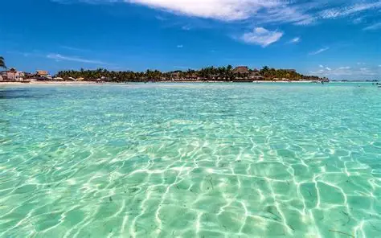
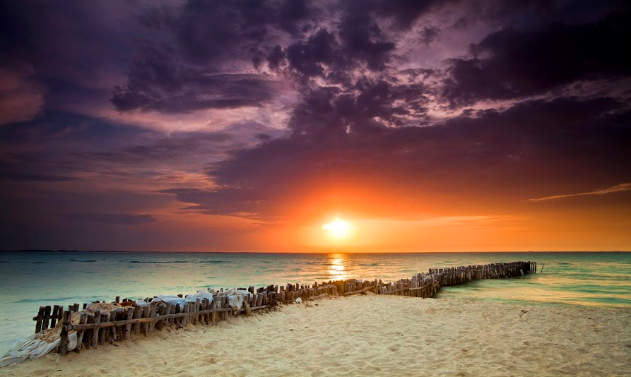

Isla Mujeres es uno de los destinos turísticos más atractivos de México, ubicado en el mar Caribe. Es conocido por sus playas de arena blanca, aguas cristalinas de color turquesa y su ambiente tranquilo.
Este destino es ideal tanto para el descanso como para la aventura, ya que ofrece actividades como snorkel, buceo, paseos en lancha y recorridos por la isla. Su ambiente relajado lo diferencia de otros destinos más concurridos.
Además, Isla Mujeres es perfecta para disfrutar de atardeceres espectaculares y paisajes naturales únicos que enamoran a todos sus visitantes.

